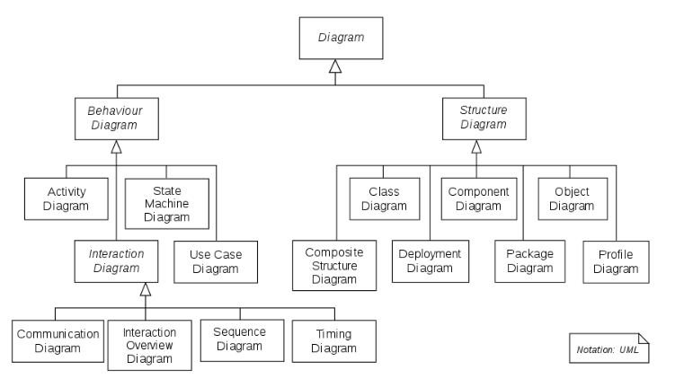

All.architecture diagrams.explanation
Architecture Diagrams#
Architecture Diagrams#
Summary#
- We use C4 as a way to describe graphically software architecture together with some conventions
- Both Mermaid and PlantUML support C4 diagrams
- Mermaid is preferred since it can be rendered natively by GitHub
- PlantUML can be rendered through some of our scripts in regular markdown
Brief Introduction to C4#
-
A detailed description of C4 is https://C4model.com
-
C4 stands for "context, container, component, code" (the 4 Cs)
-
C4 model helps developers describe software architecture
- It maps code at various level of detail
- It is useful for both software architects and developers
Different Levels of Detail#
- The 4 levels of detail are:
- (System) Context system
- How the system fits in the world
- Container
- High-level technical blocks
- Component
- Show the components inside a container (i.e., a high-level block)
- Code
- Show how components are implemented
- Represented in terms of UML class diagrams
(System) Context (Level 1)#
-
A system context describes something that delivers value to its users
- Typically a system is owned by a single software development team
-
System context diagram shows the big picture of how the software system interacts with users and other systems in the IT environment
-
The focus is not on:
- Technologies
- Protocols
- Low-level details
-
Audience:
- Both technical and non-technical people
- Both inside and outside the software development team
-
A system system is made up of one or more containers
Container (Level 2)#
-
A container represents an application
- E.g.,
- Server-side web application (e.g., Tomcat running Java EE web application, Ruby on Rails application)
- Client-side web application (e.g., JavaScript running in a web browser, e.g., using Angular)
- Client-side desktop application (e.g., an macOS application)
- Mobile app (e.g., an iOS or Android app)
- Server-side console application
- Server-less function (e.g., AWS Lambda)
- Database (e.g., MySQL, MongoDB)
- Content-store (e.g., AWS S3)
- File-system (e.g., a local filesystem)
- Shell script
- E.g.,
-
A container runs some code and stores some data
- Typically each container runs in its own process space
- Containers communicate through inter-process communication
-
A container diagram shows the high-level shape of the software architecture and how responsibilities are distributed across it
-
A container is the sum of components
- All components inside a container execute together
- Components can't be deployed as separate units
-
Audience:
- Technical people
- Inside and outside of the software development team
Component (Level 3)#
-
Component is a group of related functionality encapsulated behind a well-defined interface
- E.g., collection of classes behind an interface
-
A component diagram decomposes each container to identify major structural building blocks and interactions
-
Audience
- Software architects and developers
Code (Level 4)#
-
Code is the implementation of the software system
- Each component can represented in terms of UML class diagrams, entity relationship diagrams, etc.
- This diagram should be generated automatically from code
-
Audience
- Software architects and developers
Our Conventions for C4 Diagrams#
Mapping C4 and Code Structure#
- To simplify, we map the 4 levels of C4 in the code structure
(System) Context (Level 1)#
- = big picture of how the system interacts with users and other systems
- Mapped onto a code repository
- E.g.,
//...is a system providing data and analytics for commodity
Container (Level 2)#
- = high-level software architecture and how responsibilities are split in the system
- Mapped onto the first level of directories in a repo
- E.g., in
//...automl: application for automatic machine learning for commodity analysisedgar: application to handle EDGAR dataetl3: back-end db for time series with real-time and point-in-time semantics
Component (Level 3)#
- = a group of related functionality encapsulated behind a well-defined interface (e.g., collection of classes behind an interface)
- Mapped onto the second level of directory
- E.g., in
//.../edgarapi: real-time system storing the data from EDGARcompany_commodity_mapping: data pipeline to process mapping between commodities and companiesform8: data pipeline processing form 8
Component (Level 4)#
- = OOP classes
- Typically we organize multiple related classes in files
- E.g., in
//.../edgar/form8analyze_results.py: classes and functions to analyze results from the data pipelineextract_tables.py: classTableExtractorextracting tables from Form 8filter_tables.py: classTableFilterermatch_targets.pynormalize_table.py
Use Classes!#
-
In order to be able to describe the system with C4 it is best to use classes to separate responsibilities and package code
-
Using classes has the following advantages:
- Organizes the code in cohesive parts
- Makes clear what is a public interface vs a private interface (e.g., helpers)
- Highlights responsibility (e.g., builder, annotation, processor, analyzer)
- Simplifies the interface of functions by sharing state in the object
-
Note that classes still allow our favorite functional style of programming
- E.g., pandas is implemented with classes and it allows functional style
- The difference is going from:
python f(ton of arguments)topython o(some argument).f(other arguments)
Generating Class Diagram#
- To generate a class diagram (level 4 of C4), you can run
> dev_scripts/create_class_diagram.sh
Mermaid#
Class Diagram#
- See https://mermaid.js.org/syntax/classDiagram.html
Support for C4#
- Mermaid supports most features of C4
- See https://mermaid.js.org/syntax/c4.html
Render On-Line#
- See https://mermaid.live/edit
PlantUML#
-
Unified Modeling Language (UML) is a modeling language for software engineering to provide a standard way to visualize design of a system
-
We use mainly Class Diagrams
- For information on some class diagram convention see https://en.wikipedia.org/wiki/Class_diagram
-
You can refer to the PDF guide at http://plantuml.com/guide for an extensive description of what PlantUML can do
- We are mainly interested in the "Class diagram" section
-
The website https://structurizr.com has lots of information on using tools for C4 and lots of examples
PlantUML is Markdown#
-
We use PlantUML for rendering diagrams in our documentation
- For interactive use you can rely on online tools like:
- Online editors:
- PyCharm plugin (create and edit
.pumlfile locally):
- For interactive use you can rely on online tools like:
-
We create
README.mdandarchitecture.mdmarkdown files to document software.README.mdis for general content,architecture.mdis for code architecture description. You can embed the diagrams inarchitecture.mdfile in a correspondent folder. -
To render PlantUML in our markdown files instead of
@startumlyou need to use the tag:```plantuml ... ```
Our Conventions#
-
Names
-
Each name in mappings should be exactly the same (maybe without some invalid chars, like
.) to not create a cognitive burden to the reader. It's better to optimize for readability rather than by the number of chars. E.g.,- We keep components / classes in alphabetical order, so we can find them quickly in the code[build_configs.py] as build_configs_py [TableExtractor] as TableExtractor
-
-
Notes
-
Put notes describing some components / classes inside the blocks they refer to. E.g.,
- We use conventions for notes as for the code comments: - Start a note with a capital and end withnode mapping as map { [CIK<->Ticker] as ctmap note top of ctmap: My useful note. [CIK<->GVKEY] as cgmap }.. In this way, it may be even easier to visually distinguish notes from arrow labels. - Put notes straight after their related component definition, so a note will look like a comment in the code
-
-
Arcs
-
The direction of the arcs represents the direction of the action. E.g.,
- We use the third person for describing actionsapple --> ground : falls to
-
-
We use comments as headers to organize the
architecture.md. Note that the comments inplantumlare introduced with'. Some frequently used headers are:' Components' Databases' Containers' Edge labels' Notes
-
An example of acceptable C4 diagram plantuml snippet:
' Components component [Edgar API] as Edgar_API note top of Edgar_API : System storing the real-time\nand historical data from EDGAR. component [Headers dataset] as Headers_dataset ' Databases database "Compustat DB" as Compustat_DB note top of Compustat_DB : Third-party database\nwith financial data. ' Containers node Form8 as form8 { [analyze_results.py] as analyze_results_py note left of analyze_results_py: Computes matching statistics. [build_configs.py] as build_configs_py [edgar_utils.py] as edgar_utils_py [run_pipeline.py] as run_pipeline_py [TableExtractor] note right of TableExtractor: Extracts forms tables. [TableNormalizer] note right of TableNormalizer: Normalizes extracted tables. [TableFilterer] note right of TableFilterer: Takes only financial tables\nfrom normalized tables. [TargetMatcher] note right of TargetMatcher: Matches financial values in tables. } node mapping as mapping { [CIK<->Ticker] as CIK_Ticker [CIK<->GVKEY] as CIK_GVKEY } node universe as universe{ [S&P400] [S&P500] [S&P600] [S&P1500] } note left of universe: Universe of companies\n as Tickers/GVKEYs. ' Edge labels Edgar_API --> edgar_utils_py: provides filings payloads to Compustat_DB --> run_pipeline_py: provides target\nvalues to match on to build_configs_py --> run_pipeline_py: provides pipeline\nparameters to edgar_utils_py --> TableExtractor: provides universe filings to analyze_results_py --> run_pipeline_py: provides functions\nto run the matching in to mapping --> edgar_utils_py: provides mapping to construct\n universe as CIKs to Headers_dataset --> analyze_results_py: provides filing\ndates to TableExtractor --> TableNormalizer: provides tables to be normalized to TableFilterer --> run_pipeline_py: provides forms\n values to be matched to TargetMatcher --> analyze_results_py: matches values in TableNormalizer --> TableFilterer: provides tables to be filtered to universe --> mapping: provides universe of companies toYou can find the correspondent
architecture.mdfile here.
Plotting Online#
UML - Unified Modeling Language#
-
The Unified Modeling Language (UML) serves as a versatile visual modeling language designed to offer a standard way to visualize the design of a system
-
UML employs a standardized notation for various diagram types, broadly categorized into three primary groups:
- Structure diagrams: These diagrams depict the static elements within the system, highlighting essential components necessary in the modeled system. As they focus on system structure, they are extensively utilized in documenting software architecture
- Behavior diagrams: These diagrams portray the dynamic aspects of the system, emphasizing the actions and processes required within the modeled system. Given their role in illustrating system behavior, they are extensively used to describe the functionality of software systems
- Interaction diagrams: A subset of behavior diagrams, these emphasize the flow of data and control among the components within the modeled system

UML Class Diagrams#
- The UML Class Diagram is a graphical notation used to construct and visualize object-oriented systems
- A class diagram in the Unified Modeling Language (UML) is a type of static
structure diagram that describes the structure of a system by showing the
system's:
- Classes
- Attributes
- Methods
- Relationships among objects
Class Notation#
- A class represents a concept which encapsulates state (attributes) and behavior (methods)
- The class name is the only mandatory information
-
The class diagram consists of
- Class Name:
- The name of the class appears in the first partition
- The first letter is capitalized
- Class Attributes:
- Attributes are shown in the second partition
- The attribute type is shown after the colon
- The first letter is lowercase
- Attributes map onto member variables (data members) in code
- Class Methods:
- Methods are shown in the third partition. They are services the class provides
- The return type of a method is shown after the colon at the end of the method signature
- The return type of method parameters are shown after the colon following the parameter name
- The first letter is lowercase
- Methods map onto class methods in code
- Class Visibility:
- The
+, -, #symbols before an attribute and operation name in a class denote the visibility of the attribute and operation +denotes public attributes or methods-denotes private attributes or methods#denotes protected attributes or methods
- The
- Class Name:
-
An example of a Class Diagram is below
classDiagram class BankAccount{ #owner: str +balance: int +deposit(amount: float) bool +withdrawal(amount: float) int -checkBalance(account_number: int) float }
Class Relationships#
- Classes can engage in multiple relationships with other classes
- Relationships in UML class diagrams can be defined in several distinct types
Inheritance/Generalization#
- It indicates that:
- One of the two related classes (the subclass) is considered to be a specialized form of the other (the superclass) and
- The superclass is considered a generalization of the subclass
- Each instance of the subclass is also an indirect instance of the superclass
- Represents an "is-a" relationship
-
An abstract class name is shown in italics
-
Example: in the given diagram, class
Animalis the superclass and classDuckandFishare its subclassclassDiagram Animal <|-- Duck Animal <|-- Fish Animal : +int age Animal: +isMammal() class Duck{ +String beakColor +swim() } class Fish{ -int sizeInFeet -canEat() }
Association#
- Associations are relationships between classes in a UML Class Diagram
- They are represented by a solid line between classes
-
Simple Association
- A structural link between two peer classes
- There is an association between Class1 and Class2
classDiagram Class1 --> Class2 -
Aggregation
- A special type of association which represents a "part of" relationship
- Variant of the "has-a" association relationship
- Many instances (denoted by the diamond) of
Duckcan be associated withPond Duckis part ofPond- Objects of
PondandDuckhave separate lifetimes - In the given e.g., a Pond has zero or more Ducks, and a Duck has at most one Pond (at a time). Duck can exist separately from a Pond
classDiagram Pond o-- Duck -
Composition
- A special type of aggregation where parts are destroyed when the whole is destroyed
- Objects of
Class2live and die withClass1 Class2cannot stand by itself- In the given e.g., a
Carhas exactly oneCarburetor, and aCarburetor - Is a part of one
Car.Carburetors cannot exist as separate parts, detached from a specificCar
classDiagram Car *-- Carburetor -
Dependency
- An object of one class might use an object of another class in the code of a method. If the object is not stored in any field, then this is modeled as a dependency relationship
- Exists between two classes if changes to the definition of one may cause changes to the other (but not the other way around)
Class1depends onClass2
classDiagram Class1 ..> Class2 -
Realization
- It is a relationship between the blueprint class and the object containing its respective implementation level details
- This object is said to realize the blueprint class
- For e.g., the
Ownerinterface might specify methods for acquiring property and disposing of property. ThePersonandCorporationclasses need to implement these methods, possibly in very different ways
classDiagram class Owner{ <<interface>> +accquire(property: str) bool +dispose(property: str) bool } class Person{ -real -tangible +accquire(property: str) bool +dispose(property: str) bool } class Corporation{ -current -fixed -longterm +accquire(property: str) bool +dispose(property: str) bool } Person ..|> Owner Corporation ..|> Owner
Complete Example#
classDiagram
class Animal {
- String name
- int age
+ Animal(name: String, age: int)
+ setName(name: String): void
+ setAge(age: int): void
+ getName(): String
+ getAge(): int
+ makeSound(): void
}
class Dog {
- String breed
+ Dog(name: String, age: int, breed: String)
+ setBreed(breed: String): void
+ getBreed(): String
+ makeSound(): void
}
class Cat {
- boolean isLazy
+ Cat(name: String, age: int, isLazy: boolean)
+ setIsLazy(isLazy: boolean): void
+ getIsLazy(): boolean
+ makeSound(): void
}
class Car {
- String manufacturer
- String model
+ Car(manufacturer: String, model: String)
+ setManufacturer(manufacturer: String): void
+ setModel(model: String): void
+ getManufacturer(): String
+ getModel(): String
+ startEngine(): void
}
class Person {
- String name
- int age
- List<Car> ownedCars
+ Person(name: String, age: int)
+ setName(name: String): void
+ setAge(age: int): void
+ getName(): String
+ getAge(): int
+ addCar(car: Car): void
+ removeCar(car: Car): void
+ getOwnedCars(): List<Car>
}
Animal <|-- Dog
Animal <|-- Cat
Person "1" *-- "*" Car : owns
class SoundMaker {
<<interface>>
+ makeSound(): void
}
SoundMaker <|-- Animal
SoundMaker <|-- Dog
SoundMaker <|-- Cat
class Zoo {
- List<Animal> animals
+ Zoo()
+ addAnimal(animal: Animal): void
+ removeAnimal(animal: Animal): void
+ getAnimals(): List<Animal>
}
Zoo "1" *-- "*" Animal : contains